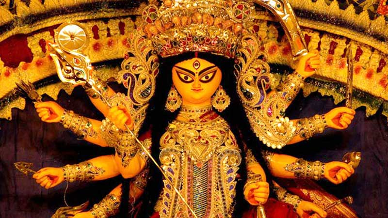
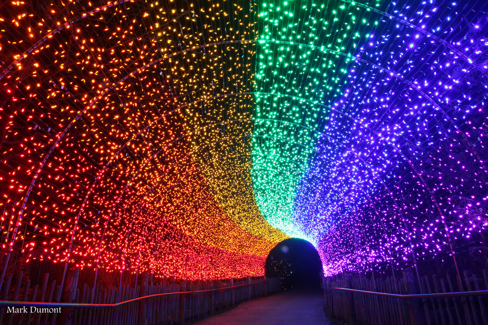
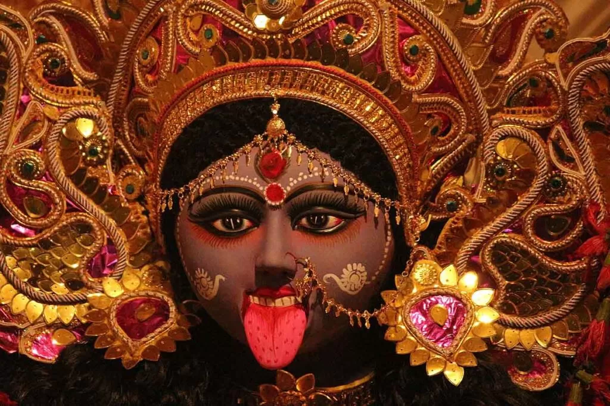

, Mahishasura.[13Durga Puja, also known as Durgotsava or Sharodotsava, is an annual Hindu festival originating in the Indian subcontinent which reveres and pays homage to the Hindu goddess Durga and is also celebrated because of Durga's victory over Mahishasur.[1][2] It is particularly popular and traditionally celebrated in the Indian states of West Bengal, Bihar, Jharkhand, Odisha, Tripura, Assam and the country of Bangladesh. The festival is observed in the Indian calendar month of Ashwin, which corresponds to September–October in the Gregorian calendar. [3][4] Durga Puja, is a ten-day festival,[5][1] of which the last five are of the most significance.[6][4] The puja is performed in homes and public, the latter featuring a temporary stage and structural decorations (known as pandals). The festival is also marked by scripture recitations, performance arts, revelry, gift-giving, family visits, feasting, and public processions.[1][7][8] Durga puja is an important festival in the Shaktism tradition of Hinduism.[9][10][11] Durga puja in Kolkata has been inscribed on the Intangible cultural heritage list of UNESCO in December, 2021.[12]  As per Hindu scriptures, the festival marks the victory of goddess Durga in her battle against the shape-shifting asura][14][A] Thus, the festival epitomizes the victory of good over evil, though it is also in part a harvest festival celebrating the goddess as the motherly power behind all of life and creation.[16][17] Durga puja coincides with Navaratri and Dussehra celebrations observed by other traditions of Hinduism,[18] in which the Ram Lila dance-drama is enacted, celebrating the victory of Rama against Ravana, and effigies of Ravana are burnt.[19]  Diwali is one of the most beautiful and joyous times in the Indian calendar, filled with love and rejoicing. It is a time of new beginnings, a festival of light, abundance, and fulfillment as well as a celebration of good over evil and wisdom over ignorance, which can be enjoyed by everyone, everywhere. The word Diwali means “row of lights,” so it is known as the Festival of Lights. For Indians, Diwali (sometimes called Deepavali) marks a time for clearing out the old to make room for the new, a time for assessing strengths and weaknesses. Homes and offices are thoroughly cleaned, but it is also a time for inner reflection and cleansing. Diwali is when we should all look into our hearts and minds and ask, “What cleaning needs to be done here?” Just as we sweep out the dark corners of our homes, we, too, should be made spotless and a dwelling place fit for the Divine. This is a time to let go of old grudges, anger, and judgments—making room for compassion, forgiveness, and love.  Kali Puja is a festival which is celebrated by the Hindus all over India particularly in the states of West Bengal, Assam, Bihar, Jharkhand and Orissa. It is also done on the same day when the festival of Diwali is celebrated but the difference is that Kali Puja is celebrated during night. Kali Puja is also known as “Shyama Puja” or “Mahanisha Puja” and mostly the puja is performed in an unconventional way as compared to other deities’ worship. Goddess Kali is worshiped during night with tantric rites, mantras and rituals. During the worship, devotees offer Red Hibiscus or “Java Kusum” flowers and seek their blessings and protection.